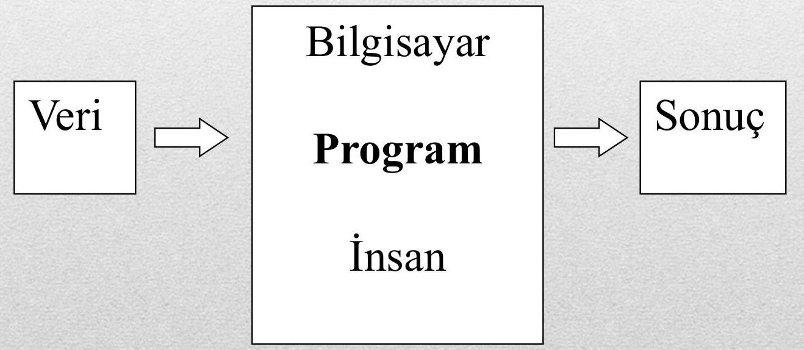
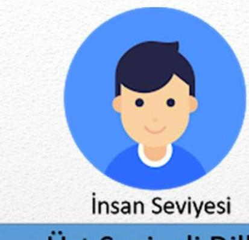
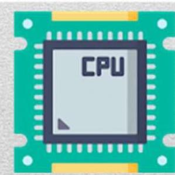
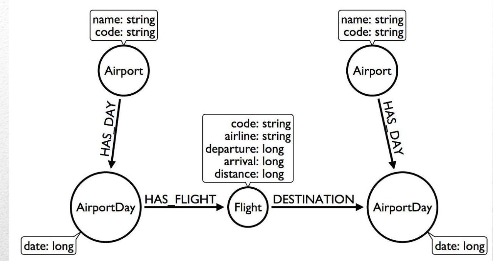
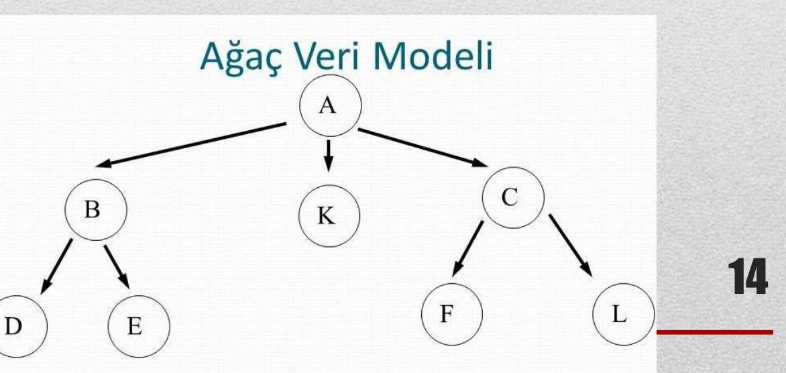

Bilgisayar Programlamaya Giriş – Ders Notu 1: Genel Giriş ve Programlamanın Temel Kavramları
Hazırlayan: Konya Teknik Üniversitesi – Elektrik-Elektronik Mühendisliği Bölümü
Tarih: 15.03.2024
Konum: Konya
İçindekiler
- Ders İçeriği
- Kaynaklar
- Temel Tanımlar
- Sayı Sistemleri ve Bilgi İfadeleri
- Veri Yorumlamasına Bağlı Anlam Değişimi
Ders İçeriği
- Genel Giriş ve Programlamanın Temel Kavramları
- Algoritma Tasarımı ve Akış Diyagramları
- C Fonksiyonlarına Giriş ve Değişkenler
- Operatörler
- Karşılaştırma İfadeleri
- Döngüler
- Diziler, Matrisler
- Sıralama, Arama
- Fonksiyonlar
- İşaretçiler
- String (Sözce)
- Matematiksel Fonksiyonlar ve Uygulamalar
- Dosya İşlemleri
- Örnek Uygulamalar
Kaynaklar
- Programlama Sanatı, Algoritmalar, C Dili Uyarlaması – Dr. Rifat ÇÖLKESEN, Papatya Yayıncılık
- Her Yönüyle C – Tevfik KIZILÖREN, Kodlab
- C Programlama Dili – Dr. Rifat ÇÖLKESEN, Papatya Yayıncılık
- http://www.cagataycebi.com/programming/#c
- http://www1.gantep.edu.tr/~bingul/c/
- http://web.itu.edu.tr/uyar/programlama/c.pdf
Temel Tanımlar
Program
- Belirli bir görevi yerine getiren algoritmik bir yapıdır.
- Kodlanarak (yazılım) ya da donanımsal olarak (örneğin FPGA) tasarlanabilir.

Yazılım ve Program Kodu
- Yazılım: Birden fazla program, veri ve dokümanın birleşimiyle oluşan bütündür.
- Program Kodu: Belirli bir işi yapmak üzere bir programlama diliyle yazılmış algoritmik ifade.
Değişken, Dizi, Operatör
- Değişken: Verilerin bellekte saklandığı simgesel isim (örn:
sicaklik,tekrarSayisi). - Dizi: Aynı türdeki verilerin tek bir isim altında sıralı saklandığı yapı.
- 1 boyutlu → vektör, 2 boyutlu → matris.
- Operatör: Veriler üzerinde işlem yapan semboller (örn:
+,-,sqrt()gibi).
Deyim ve Atama
- Deyim (Statement): Tek bir işlemi ifade eder (örn: “Pırasaları doğra” → bir deyim).
- Atama Deyimi: Bir değişkene değer verme işlemi.
- Gösterim:
N ← 5(N değişkenine 5 atanır).
- Gösterim:
Donanım, Bellek, Saklama Birimleri
- Donanım: Fiziksel bileşenler (işlemci, bellek, disk vb.).
- Bellek (RAM): Geçici, hızlı veri saklama birimi.
- Saklama Birimleri (HDD, SSD, CD): Kalıcı, ancak daha yavaş depolama.
İşlemci ve İşletim Sistemi
- İşlemci (CPU): Komutları işleyen merkez birim (Intel, AMD vb.).
- İşletim Sistemi (OS): Donanımı kullanıcıya/uygulamalara sunan ara katman (Windows, Linux, macOS).
Dosya
- Disk üzerinde saklanan veri paketidir.
- Her dosyanın başlangıç ve bitiş adresi vardır.
- Silme işlemi sadece adresi siler → çok hızlıdır.
- Uzantılar veri türünü belirtir:
.c,.jpeg,.docvb.
Programlama Dilleri ve C Dili
- Programlama dilleri, insan-makine iletişimi için söz dizimi (syntax) kurallarıyla tanımlanır.
- C Dili: Orta seviyeli, 1972’de Dennis Ritchie tarafından PDP-11 için geliştirildi.
- C, hem donanıma yakın (işaretçiler, bellek yönetimi) hem de taşınabilir yapıdadır.


Karakter Tabloları ve Veri Yapıları
- Karakter Tablosu: İnsan dilindeki sembollerin makine diline (binary) dönüşümünü sağlar.
- Örn:
BABA→ ASCII:66 65 66 65(ondalık: 66 = ‘B’, 65 = ‘A’)
- Örn:
- Sözce (String): Karakter dizisi; aritmetik işleme girmez, ancak sayıya dönüştürülebilir.
- Veri Yapısı: Bellekte verinin nasıl saklandığını belirtir:
int(tamsayı),float(gerçel sayı),char(karakter) vb.
Problem Çözme Yaklaşımları
- Böl ve Yönet: Büyük problemi küçük alt problemlere ayır.
- Çevrimli (Iterative):
for,whiledöngüleriyle tekrar. - Rekürsif (Recursive): Fonksiyonun kendini çağırması.
Sayı Sistemleri ve Bilgi İfadeleri
Bit ve Bellek Birimleri
- Bit: En küçük veri birimi →
0veya1. - 1 Byte = 8 Bit
- 1024 Byte = 1 KB, 1024 KB = 1 MB, 1024 MB = 1 GB, 1024 GB = 1 TB
İkili (Binary), Onaltılı (Hexadecimal) Sistemler
- 1 Byte → 2⁸ = 256 farklı değer (0–255)
(11111111)₂ = (255)₁₀
- Onaltılık (Hex): 4 bit = 1 hex basamak.
- Tablo ile kolay dönüşüm:
10 → A,11 → B, …,15 → F
- Tablo ile kolay dönüşüm:
| Decimal | Hex | Binary |
|---|---|---|
| 10 | A | 1010 |
| 15 | F | 1111 |
- n bit ile ifade edilebilecek en büyük sayı:
2ⁿ – 1- Örn: 1 milyon için →
2²⁰ = 1.048.576→ 20 bit yeterli, ama C’de standart boyutlar kullanılır → 32 bit (4 Byte) seçilir.
- Örn: 1 milyon için →
Tümleyenler ve Negatif Sayılar
- 1’e Göre Tümleyen: Bitleri tersine çevir (
0 ↔ 1)(10110100)₂ → (01001011)₂
- 2’ye Göre Tümleyen: 1’e göre tümleyene
1ekle → C dilinde negatif sayı bu şekilde saklanır.(180)₁₀ → (10110100)₂
→ 1’e göre tümleyen:(01001011)₂ = 75
→ 2’ye göre tümleyen:(01001100)₂ = 76→ yani-180olarak saklanır.
💡 C ve çoğu dil 2’ye göre tümleyen kullanır.
BCD Kodlama
- Binary Coded Decimal: Her ondalık basamak 4 bit ile kodlanır.
4859→0100 1000 0101 1001
- Dezavantaj: 16 bit ile sadece
0–9999(normalde0–65535) → verimsiz.
ASCII ve Genişletilmiş ASCII
- ASCII: 1963’te standartlaştırılan 7-bit (128 karakter) kod tablosu.
- Harfler, rakamlar, noktalama işaretleri.
'A' = 65,'a' = 97,'0' = 48
- Genişletilmiş ASCII: 8-bit → 256 karakter (Türkçe karakterler yoktur!)


UNICODE
- 16-bit veya daha fazla → 65.536+ karakter.
- Türkçe (
Ğ,İ,Ş,ç), Yunanca, Arapça, Japonca karakterleri destekler. - Evrensel standart: UTF-8, UTF-16 gibi kodlamalarla uygulanır.
Veri Yorumlamasına Bağlı Anlam Değişimi
Aynı bit dizisi, veri türüne göre farklı anlamlar taşır:
Bit Dizisi:
0100001001000001
| Yorum Türü | Anlamı |
|---|---|
| String (ASCII) | 'B' 'A' → "BA" |
| BCD | 0100 0010 0100 0001 → 4 2 4 1 → 4241 |
| 16-bit Tamsayı | (0100001001000001)₂ = 16961 |
🔍 Aynı veri, nasıl yorumlandığına göre tamamen farklı sonuçlar verir!
Özet
Bu ders notu, bilgisayar programlamaya giriş seviyesinde temel kavramları, veri temsillerini ve C dilinin yerini açıklamaktadır. Programlama yalnızca kod yazmak değil, veriyi doğru anlamak, donanım-software ilişkisini kavramak ve problemleri yapılandırarak çözmektir.
Motivasyon:
“Bir program yazmak, bir düşünceyi makineye öğretmektir.”
— Bilinmeyen
Kaynaklar
- Dr. Rifat ÇÖLKESEN, Programlama Sanatı, Papatya Yayıncılık
- Tevfik KIZILÖREN, Her Yönüyle C, Kodlab
- Çeşitli internet kaynakları (Gantep, İTÜ, Çağatay Çebi)
- ASCII ve Unicode standart dokümanları
📌 Not: Bu ders notu, Konya Teknik Üniversitesi EEM Bölümü ders içeriğine uygun olarak hazırlanmıştır. Görseller orijinal sunumdan alınmıştır.